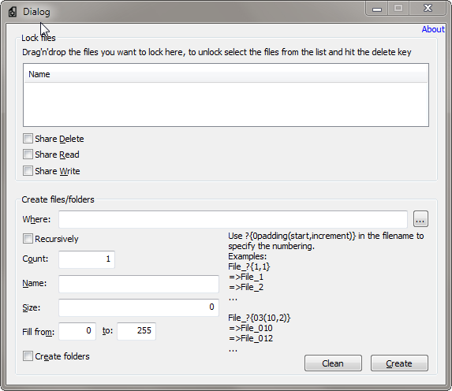

FileTool
Sometimes it's necessary to create a lot of test files, or just a few but very big ones. Or you need a thousand folders to with a thousand files in each of them to test with your application. FileTool can do that for you.
Or you need to lock files to test how your application behaves if it can not access those files. FileTool can do that for you too.
Now, go to the download page.